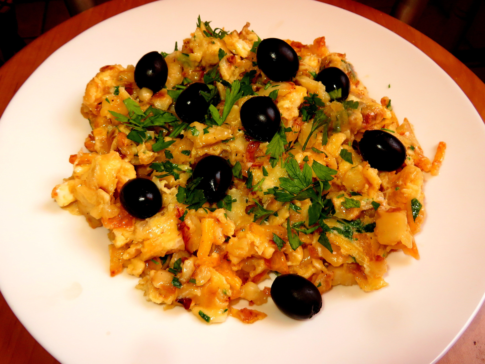
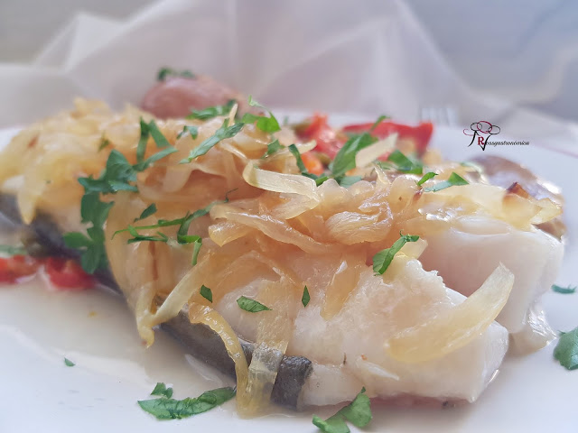
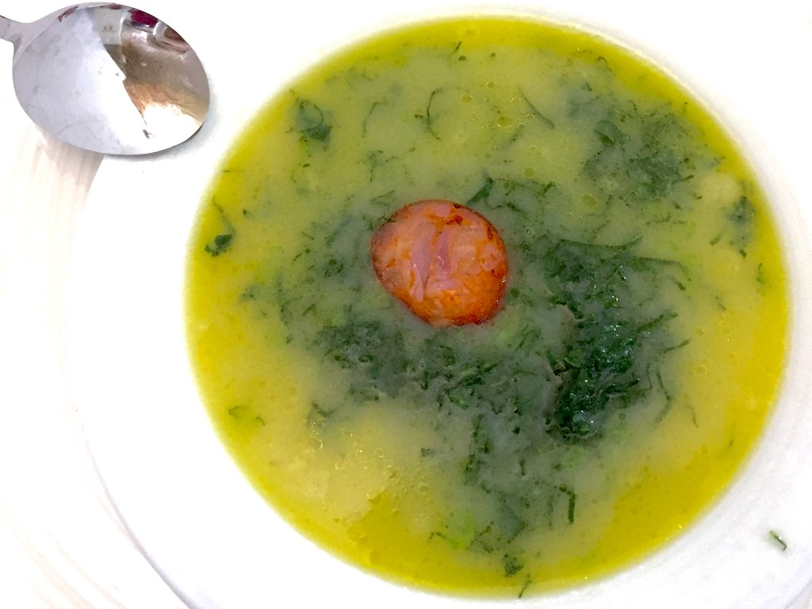

| Nombre | Receta | Foto |
|---|---|---|
| Bacalao à Brás |
1. Corta las patatas tipo paja. Pela y corta las cebollas en rodajas muy finas y pica finamente el ajo. 2. Fríe las patatas en aceite muy caliente y resérvalas sobre papel de cocina. Sálalas una vez fritas. 3. Rehoga las cebollas y el ajo, y añade el bacalao desmigado y desalado junto con la mitad de las patatas paja fritas. 4. Remueve todo bien con una cuchara de madera. Añade los huevos sin batirlos, como si fueran para un revuelto. 5. Sirve el revoltillo de bacalao en el centro de los platos y el resto de las patatas alrededor. Espolvorea con perejil fresco picado. |
 |
| Bacalao a Lagareiro |
1. Lavar y trocear los pimientos en tiras.Poner la mitad del Aceite en una sartén y pochar a fuego lento las tiras de pimiento, salar al gusto.
Cuando los pimientos estén caídos y blandos, retirar de la sartén y poner a escurrir sobre un colador. Recuperamos todo el aceite del pochado. 2. Pelar y cortar las cebolla en juliana y rehogar con los 50 ml. de Aceite que nos queda, añadir un poco de sal al gusto. Cuando está pochada, sin llegar a tomar color, retiramos la cebolla sobre un colador y recuperamos el Aceite. 3. Lavamos las patatas y húmedas las metemos un recipiente apto para el microondas, tapamos y cocinamos a máxima potencia durante 10 minutos. Pasado el tiempo programado, dejamos las patatas en reposo hasta que enfríen un poco. 4. Precalentamos el horno a 180º Chafamos un poco las patatas con la palma de la mano, presionando sobre ellas sobre una superficie plana. En una fuente para horno, colocamos todas las preparaciones en el siguiente orden: Disponemos las patatas por el perímetro de la fuente En el centro extendemos los pimientos. Sobre los pimientos colocamos los lomos de bacalao con la piel hacía abajo. Encima de cada lomo de bacalao ponemos una parte de cebolla pochada. Regamos todo con el Aceite que tenemos reservado. Cocinamos en el horno a 180º durante 10 minutos.Espolvorear fuera del horno con perejil fresco picado. |
 |
| Caldo verde |
1. Retiramos las hojas de la berza (col gallega) y las lavamos. Las colocamos unas encima de otras, las enrollamos y las cortamos en tiras finas. Reservamos. 2. Cortamos la cebolla y el ajo en “brunoise”. En una cazuela (donde haremos el caldo), vertemos una lámina de aceite de oliva virgen extra y sofreímos un par de minutos. 3. Pelamos las patatas y las añadimos en dados grandes. Incorporamos agua tibia, hasta tapar por completo. Salamos al gusto. Tapamos la olla y cocinamos 25 minutos (hasta que las patatas estén tiernas). 4. Cortamos el chorizo en rodajas y salteamos un par de minutos en una sartén. 5. Pasado el tiempo de cocinado, trituramos las patatas y hortalizas con la batidora. Resultará una crema fina y homogénea. Probamos de sal y rectificamos si es necesario. 6. Añadimos ahora la col rizada y el chorizo (desgrasado). Mezclamos. Volvemos a tapar y cocinamos otros 5 minutos más. 7. Servimos bien caliente en la mesa, acompañado de un buen pan artesano. Cómo dirían en Portugal, está pronta a servir. |
 |
| Pollo asado Portugués |
1. Usando un mortero y una maja, agregue los primeros 6 ingredientes molidos para combinar después de cada adición. Agregue aceite de oliva y mezcle bien. 2. Extienda la pasta de manera uniforme en ambos lados del pollo. 3. Ase a la parrilla en una barbacoa de gas medianamente caliente, girándola varias veces, hasta que esté lista. 4. ¡Sirve con salsa de piri piri al lado para aquellos a quienes les gusta el calor! |
|
| Pastéis de Belém |
1. En un bol comenzamos mezclando la maicena, el azúcar y las yemas de los huevos. Mezclamos muy bien hasta obtener una mezcla homogénea. 2. En un cazo mientras tanto, vamos infusionando la leche. Ponemos la leche con la canela y el limón y llevamos a hervir. Cuando rompa a hervir retiramos y tapamos. Dejamos reposar 20 minutos. 3. Agregamos la mezcla y ponemos a fuego muy suave. Con unas varillas vamos dando vueltas hasta que se cree una crema pastelera. Esta crema debe de coger una consistencia cremosa pero no llegar a apelmazarse. 4. Cogemos la lámina de hojaldre y hacemos círculos de hojaldre de unos 8 cm de diámetro. 5. Ponemos las láminas de hojaldre en el molde previamente untado de mantequilla para que no se pegue y la crema por encima. Pinchamos un poco la lámina para que no se hinche. 6. Precalentamos el horno e introducimos durante unos 15 minutos hasta que se dore por arriba. Tened cuidado porque se queman rápidamente. A los 10 minutos estad vigilando por si acaso alguno tiene menos crema pastelera y se dora mucho, es mejor dejarlo un pelín más crudos que estén muy tostados. |